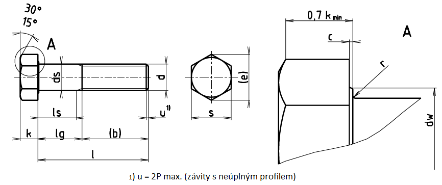

| d1) | M36 | (M39) | M42 | (M45) | M48 | (M52) | M56 | (M60) | M64 |
|---|---|---|---|---|---|---|---|---|---|
| P | 4 | 4 | 4,5 | 4,5 | 5 | 5 | 5,5 | 5,5 | 6 |
| b3) | 84 | 90 | 96 | 102 | 108 | 116 | - | - | - |
| b4) | 97 | 103 | 109 | 115 | 121 | 129 | 137 | 145 | 153 |
| cmin. cmax. |
0,2 0,8 |
0,3 1 |
0,3 1 |
0,3 1 |
0,3 1 |
0,3 1 |
0,3 1 |
0,3 1 |
0,3 1 |
| ds min. | 35,38 | 38,38 | 41,38 | 44,38 | 47,38 | 51,26 | 55,26 | 59,26 | 63,26 |
| ds max. | 39,4 | 42,4 | 45,6 | 48,6 | 52,6 | 56,6 | 63 | 67 | 71 |
| dw min. | 51,11 | 55,86 | 59,95 | 64,7 | 69,45 | 74,2 | 78,66 | 83,41 | 88,16 |
| emin. | 60,79 | 66,44 | 71,3 | 76,95 | 82,6 | 88,25 | 93,56 | 99,21 | 104,86 |
| smax. smin. |
55 | 60 | 65 | 70 | 75 | 80 | 85 | 90 | 95 |
| 53,8 | 58,8 | 63,1 | 68,1 | 73,1 | 78,1 | 82,8 | 87,8 | 92,8 | |
| k< | 22,5 | 25 | 26 | 28 | 30 | 33 | 35 | 38 | 40 |
| Δk | 0,42 | 0,42 | 0,42 | 0,42 | 0,42 | 0,5 | 0,5 | 0,5 | 0,5 |
| rmin. | 1 | 1 | 1,2 | 1,2 | 1,6 | 1,6 | 2 | 2 | 2 |
| l | Δl | ls lg5) 6) | M36 | (M39) | M42 | (M45) | M48 | (M52) | M56 | (M60) | M64 |
|---|---|---|---|---|---|---|---|---|---|---|---|
| 140 | ±2 | ls min. lg max. |
36 56 |
||||||||
| 150 | ±2 | ls min. lg max. |
46 66 |
40 60 |
Pro délky ležící nad lomenou čarou se používají šrouby dle ISO 4017. | ||||||
| 160 | ±2 | ls min. lg max. |
56 76 |
50 70 |
41,5 64 |
||||||
| 180 | ±2 | ls min. lg max. |
76 96 |
70 90 |
61,5 84 |
55,5 78 |
47 72 |
||||
| 200 | ±2,3 | ls min. lg max. |
96 116 |
90 110 |
81,5 104 |
75,5 98 |
67 92 |
59 84 |
|||
| 220 | ±2,3 | ls min. lg max. |
103 123 |
97 117 |
88,5 111 |
82,5 105 |
74 99 |
66 91 |
55,5 83 |
||
| 240 | ±2,3 | ls min. lg max. |
123 143 |
117 137 |
108,5 131 |
102,5 125 |
94 119 |
86 111 |
75,5 103 |
67,5 95 |
|
| 260 | ±2,6 | ls min. lg max. |
143 163 |
137 157 |
128,5 151 |
122,5 145 |
114 139 |
106 131 |
95,5 123 |
87,5 115 |
77 107 |
| 280 | ±2,6 | ls min. lg max. |
163 183 |
157 177 |
148,5 171 |
142,5 165 |
134 159 |
126 151 |
115,5 143 |
107,5 135 |
97 127 |
| 300 | ±2,6 | ls min. lg max. |
183 203 |
177 197 |
168,5 191 |
162,5 185 |
154 179 |
146 171 |
135,5 163 |
127,5 155 |
117 147 |
| 320 | ±2,85 | ls min. lg max. |
203 223 |
197 217 |
188,5 211 |
182,5 205 |
174 199 |
166 191 |
155,5 183 |
147,5 175 |
137 167 |
| 340 | ±2,85 | ls min. lg max. |
223 243 |
217 237 |
208,5 231 |
202,5 225 |
194 219 |
186 211 |
175,5 203 |
167,5 195 |
157 187 |
| 360 | ±2,85 | ls min. lg max. |
243 263 |
237 257 |
228,5 251 |
222,5 245 |
214 239 |
206 231 |
195,5 223 |
187,5 215 |
177 207 |
| 380 | ±2,85 | ls min. lg max. |
257 277 |
248,5 271 |
242,5 265 |
234 259 |
226 251 |
215,5 243 |
207,5 235 |
197 227 |
|
| 400 | ±2,85 | ls min. lg max. |
268,5 291 |
262,5 285 |
254 279 |
246 271 |
235,5 263 |
227,5 255 |
217 247 |
||
| 420 | ±3,15 | ls min. lg max. |
288,5 311 |
282,5 305 |
274 299 |
266 291 |
255,5 283 |
247,5 275 |
237 267 |
||
| 440 | ±3,15 | ls min. lg max. |
308,5 331 |
302,5 325 |
294 319 |
286 311 |
275,5 303 |
267,5 295 |
257 287 |
||
| 460 | ±3,15 | ls min. lg max. |
314 339 |
306 331 |
295,5 323 |
287,5 315 |
277 307 |
||||
| 480 | ±3,15 | ls min. lg max. |
334 359 |
326 351 |
315,5 343 |
307,5 335 |
297 327 |
||||
| 500 | ±3,15 | ls min. lg max. |
335,5 363 |
327,5 355 |
317 347 |
||||||